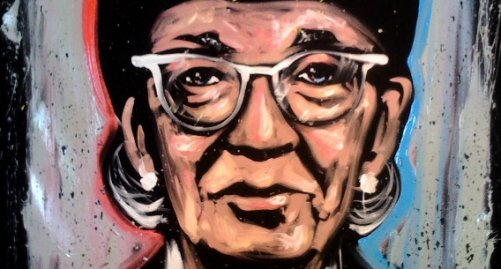

Achievements
UNIVAC (UNIVersal Automatic Computer I) was the first general-purpose electronic digital computer design for business application produced in the United States.
COBOL (an acronym for COmmon Business-Oriented Language). The new language extended Hopper's FLOW-MATIC language with some ideas from the IBM equivalent, COMTRAN. Hopper's belief that programs should be written in a language that was close to English (rather than in machine code or in languages close to machine code, such as assembly languages) was captured in the new business language, and COBOL went on to be the most ubiquitous business language to date.
In 1949 Hopper joined the Eckert-Mauchly Computer Corp., where she designed an improved compiler, which translated a programmer’s instructions into computer codes. She remained with the firm when it was taken over by Remington Rand (1951) and by Sperry Rand Corp. (1955). In 1957 her division developed Flow-Matic, the first English-language data-processing compiler.
Hopper was elected a fellow of the Institute of Electrical and Electronic Engineers (1962), was named the first computer science Man of the Year by the Data Processing Management Association (1969), and was awarded the National Medal of Technology (1991). She was posthumously awarded the Presidential Medal of Freedom in 2016.